<!doctype html>
<html>
    <head>
        <meta charset="utf-8">
        <meta http-equiv="X-UA-Compatible" content="chrome=1">
        <title>Manual do Cliente - eProcurement</title>
        <link rel="stylesheet" href="../../stylesheets/styles.css">
        <link rel="stylesheet" href="../../stylesheets/github-dark.css">
        <script src="https://ajax.googleapis.com/ajax/libs/jquery/1.7.1/jquery.min.js"></script>
        <script src="../../javascripts/main.js"></script>
        <!--[if lt IE 9]>
            <script src="//html5shiv.googlecode.com/svn/trunk/html5.js"></script>
        <![endif]-->
        <meta name="viewport" content="width=device-width, initial-scale=1, user-scalable=no">

    </head>
    <body>

        <header>
            <h1>eProcurement</h1>
            <p>Documentação do Cliente - eProcurement</p>
        </header>

        <div id="banner">
            <span id="logo"></span>

            <a href="../../index.html" class="button"><strong>Página Inicial</strong></a>

            <div class="downloads">
                <span>Downloads:</span>
                <ul>
                    <li><a href="https://github.com/eprocurement-lecom/eprocurement-lecom.github.io/releases/download/v4/Manual_eProcurement_v4-Clientes.pdf" class="button">Clientes</a></li>
                </ul>
            </div>
        </div><!-- end banner -->

        <div class="wrapper">
            <nav>
                <ul>
                    <li class="tag-h2">
                        <a href="introducao.html">INTRODUÇÃO</a>
                    </li>
                    <li class="tag-h2">
                        <a href="modulo_cliente.html">MÓDULO CLIENTES</a>
                        <ul>
                            <li class="tag-h2">
                                <a href="tipo_usuario.html">Tipos de Usuário</a>
                                <a href="usuario_master.html">Usuário "Master"</a>
                                <a href="usuario_empresa.html">Usuário "Empresa"</a>
                                <a href="usuario_comprador.html">Usuário "Comprador"</a>
                            </li>
                        </ul>
                        <a href="gerenciamento_fornecedores.html">GERENCIAMENTO DO FORNECEDOR</a>
                    </li>
                </ul>
            </nav>>
            <section>
                <h3>
                    <a id="welcome-to-github-pages" class="anchor" href="#welcome-to-github-pages" aria-hidden="true"><span aria-hidden="true" class="octicon octicon-link"></span></a>Usuário "Master"</h3>
                <p>Para acessar a ferramenta com o usuário Master, é preciso acessar clicar sobre a opção “módulo Clientes”. No campo Empresa, escolha a opção “Master” e, nos campos Usuário e Senha, digite “master”. Em seguida, clique botão “entrar”. Observe a figura a seguir:
                </p>

                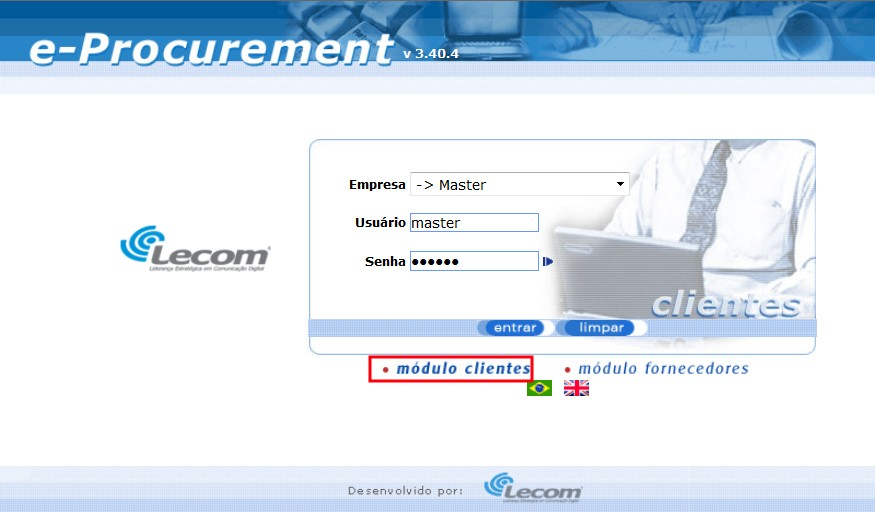
                <p>Após realizar o login, é exibida uma tela contendo várias opções de gerenciamento. Veja a figura a seguir: </p>

                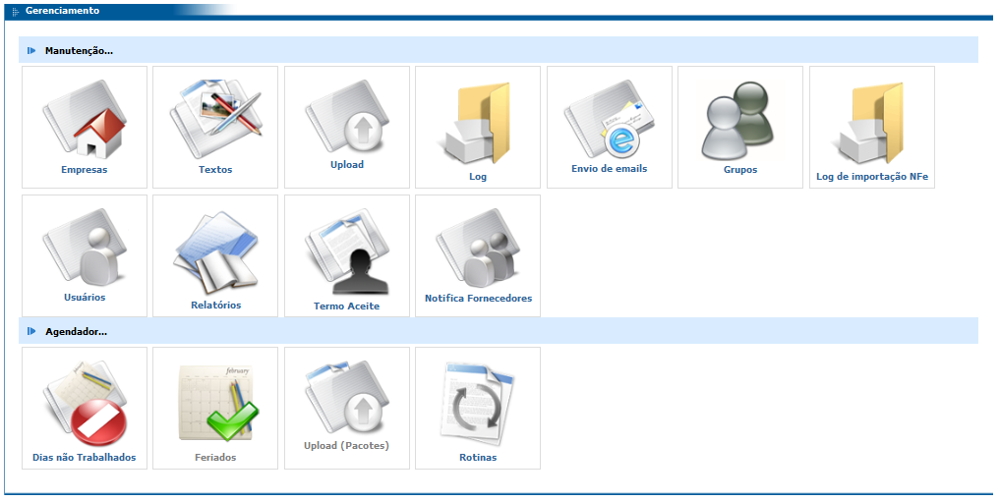

                <br>
                <h3>Manutenção - Empresas</h3>
                
                <p>Este recurso permite a configuração de todas as empresas existentes no banco de dados, basta selecionar a empresa desejada no campo Empresa. Por meio desta tela é possível configurar, por exemplo, os usuários e suas respectivas senhas para acesso à ferramenta, o logotipo da empresa, o e-mail do responsável pela empresa no e-Procurement, etc.</p>

                

                <p><strong>Destacar cotações que vencerão em X dias:</strong> na listagem de cotações (módulo clientes), as cotações que vencerão daqui a X dias (neste exemplo, 10 dias) serão destacadas com a cor amarela.
                </p>
                <p><strong>Não permitir responder cotações X dias da data de encerramento:</strong> após o número de dias determinado, levando em consideração como data de início a data do encerramento </p>
                <p><strong>Avisar o fornecedor da entrega a partir de X dias da data de encerramento:</strong> a rotina de envio de e-mails enviará um e-mail para o fornecedor avisando a data da entrega do pedido com X dias de antecedência.</p>
                <p><strong>Avisar fornecedor a cada X dias. </strong></p>
                <p><strong>Servidor de email:</strong> endereço do servidor de email que será utilizado para envio de emails no sistema. </p>
                <p><strong>Email do responsável pela empresa no eProcurement:</strong> email utilizado como remetente no envio de algumas notificações do sistema. </p>
                <p><strong>Email do responsável pelo Pré Cadastro de Fornecedores:</strong> email que aparece para o fornecedor ao concluir o pré-cadastro no eProcurement. </p>
                <p><strong>Empresa padrão para Pré Cadastro de Fornecedores:</strong> empresa padrão utilizada no pré-cadastro do fornecedor.</p>
                <p><strong>Autenticação de email:</strong> define se o servidor de e-mail exige autenticação do usuário. Se estiver "sim", o sistema fará a autenticação. </p>
                <p><strong>Usuário:</strong> usuário para autenticação no servidor de email.</p>
                <p><strong>Senha:</strong> senha para autenticação no servidor de email.</p>
                <p><strong>Endereço WEB da aplicação:</strong> endereço de acesso ao eProcuremente. Utilizado nos emails para colocar o link de acesso ao eProcurement.</p>
                <p><strong>Imagem do Logotipo:</strong> imagem que será exibida na página de login da ferramenta.</p>
                <p><strong>Área de FTP:</strong> se houver integração de Notas com o Logix (COM0019 ou SUP0552), deve ser configurado o FTP. O eProcurement grava neste FTP os arquivos das NFs que o Logix vai importar.</p>
                <p><strong>Condição de pagamento para NF de remessa:</strong> esta é a condição de pagamento padrão que será utilizada quando o fornecedor for gerar uma nota fiscal de remessa. </p>
                <p><strong>Usuário:</strong> usuário para autenticação na área de FTP. </p>
                <p><strong>Senha:</strong> senha para autenticação na área de FTP.</p>
                <p><strong>Condição de Pagamento para NF de Remessa:</strong> campo utilizado na digitação da Nota Fiscal. Se a NF que está sendo digitada for uma nota fiscal de remessa, a condição de pagamento da nota será fixada com a condição de pagamento informada neste campo. </p>
                <p><strong>Local dos anexos dos itens:</strong> descreve os locais que os anexos dos itens serão salvos. </p>
                <p><strong>Web Service (Autenticar pelo Active Directory):</strong> se estiver preenchido o sistema fará a validação do login do usuário empresa e comprador pelo AD, caso contrário a validação será feita pelo portal. </p>
                <br>
                <p><strong>Nota Fiscal Eletrônico</strong></p>
                <p><strong>Caminho de Leitura:</strong> caminho onde se encontra os arquivos XML da NFe. Deve ser um diretório no próprio servidor do eProcurement ou um diretório na rede acessível pelo servidor eProcurement.</p>
                <p><strong>Sub-série:</strong> Valor fixo que será gravado nas NFs importadas pela rotina de importação automática.</p>
                <p><strong>Espécie:</strong> valor fixo que será gravado nas NFs importadas pela rotina de importação automática. </p>
                <p><strong>Email:</strong> após fazer o upload da NFe pelo portal, o XML é enviado para o email informado neste campo. </p>
                <p><strong>Email notificação:</strong> na importação automática, após o processamento do XML, é enviada uma notificação para esse email com o status da importação dos XMLs (Sucesso ou Erro). </p>
                <p><strong>Formato Data:</strong> usado na criação do arquivo “.nf”. Exemplo: “AAAAMM-DD HH:MM:SS”.</p>
                <p><strong>Código do idioma Inglês no ERP:</strong> código do idioma Inglês cadastrado no Logix. Utilizado para mostrar informações do item em inglês. </p>
                <p><strong>Tipo (Canal Aberto):</strong> indica se no Canal Aberto haverá a opção para o fornecedor enviar sugestões e dúvidas sobre o eProcurement. </p>
                <p><strong>Email do responsável pelas sugestões do Canal Aberto</strong></p>
                <p><strong>Quantidade de linhas para exibição inicial do texto da OC</strong> (0 = Mostrar tudo).</p>
                <p><strong>Exportação de cotações, diretório de armazenamento dos arquivos</strong> (Diretório previamente criado). </p>
                <p><strong>Upload de cotações, diretório de armazenamento dos arquivos</strong> (Diretório previamente criado). </p>
                <p><strong>Situação das ordens de compra disponíveis (em aberto) no eProcurement:</strong> descrever quais letras serão simbolizarão situações válidas na ferramenta. Exemplo: “A, B, C”. </p>
                <p><strong>Diretório de armazenamento de anexos do contrato</strong></p>
                <p><strong>Valor do campo IES_TIP_COTACAO da COTACAO_PRECO para criação da cotação</strong></p>
                <p><strong>Etapa de aprovação de contratos:</strong> “ativo” ou “inativo” identifica se a etapa de aprovação de contratos fará parte do processo ou não. </p>
                <br>
                <h3>Manutenção - Textos </h3>
                <p>Este módulo serve para cadastrar textos dinâmicos para as áreas de Contato, Informações Financeiras e Manutenção da ferramenta, e é possível cadastrar textos para cada idioma disponível. Observe a figura a seguir: <storng>IMAGEM LOGO AO LADO DO TEXTO</storng></p>
                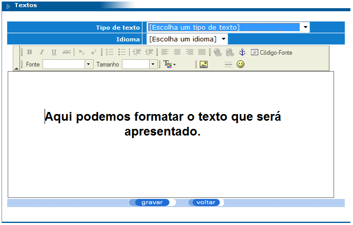
                <p>Como é possível perceber, esta tela se parece bastante com um editor de texto e é muito fácil de usar.  O campo “Tipo de texto” é uma lista que contém as opções: </p>
                <p><strong>Contato:</strong> o texto cadastrado para esta área é exibido quando o usuário clicar sobre o link Contato disponível na tela de login do módulo Fornecedor (observe as figuras 6 e 7 a seguir). Sendo assim, é possível cadastrar algum texto contendo, por exemplo, o telefone de contato da empresa. </p>
                <br>
                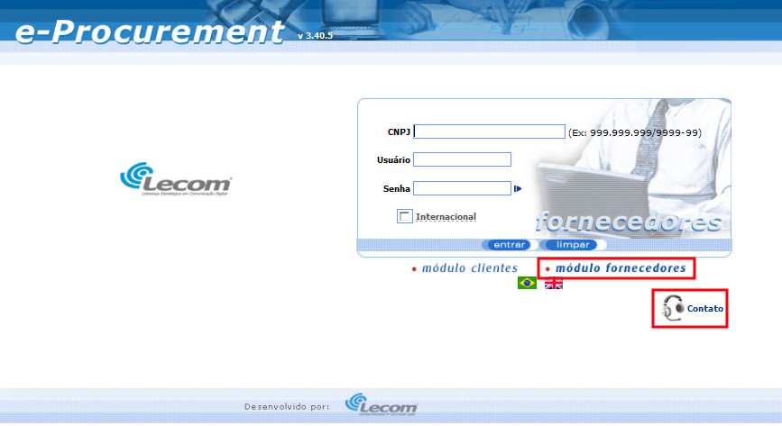
                <p>Clicando em “módulo fornecedores” e, em seguida, em Contato, a tela com as informações cadastradas acima será exibida, como no exemplo abaixo:</p>
                <br>
                
                <p><strong>Informações Financeiras:</strong> o texto cadastrado para esta área é exibido na área de ajuda da tela de detalhamento de Informações Financeiras tanto do módulo clientes quanto do módulo fornecedores. A tela de Informações Financeiras pode ser acessada clicando na opção “Inf. Financeiras” (módulo clientes) ou na opção “Informações Financeiras” (módulo fornecedores) do menu superior da ferramenta.  </p>
                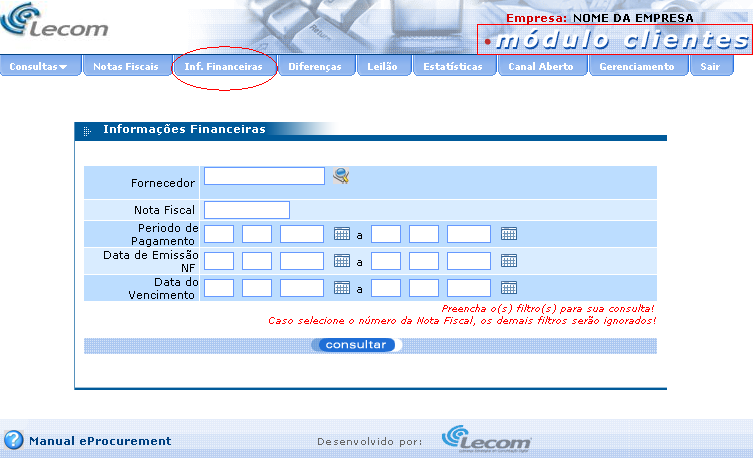
                
                <p>Se for feita uma pesquisa em qualquer uma das telas das figuras 8 e 9, será exibida uma listagem. Clicando sobre qualquer nota fiscal desta listagem (figura 10), é exibida uma tela de detalhamento da nota fiscal escolhida. Para visualizar o texto de ajuda cadastrado no cadastro de textos, pasta clicar sobre o link “Dúvida” conforme destacado na figura 11, observe: </p>
                
                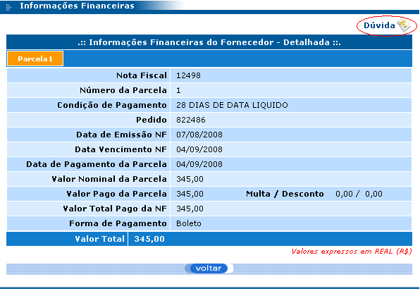
                <p>Após clicar no link “Dúvida”, será exibida a seguinte tela: </p>
                
                <p><strong>Manutenção:</strong> este texto é exibido quando a ferramenta estiver em manutenção, é uma forma de avisar o usuário que isto está acontecendo. Sendo assim, sempre que a ferramenta estiver com a configuração de manutenção ativada, a mensagem cadastrada neste módulo será exibida assim que o usuário tentar acessar a url do e-Procurement pelo navegador. A figura a seguir mostra um exemplo de mensagem que pode ser utilizada neste caso: </p>
                

                <br>
                <h3>Manutenção – Upload </h3>
                
                <p>Este módulo é responsável pelo upload (transferência de arquivos de um lugar para outro) de imagens que poderão ser utilizadas no e-Procurement.</p>
                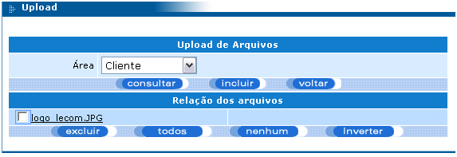
                <p>Atualmente, estas imagens só ficam disponíveis para utilização em dois lugares: </p>
                <p><strong>Tela de Gerenciamento de Empresas:</strong> pode ser acessada pelo módulo clientes  menu Gerenciamento  Empresas (observe a figura 4, campo “Imagem do Logotipo”). Quando se configura uma imagem de logotipo para uma empresa, esta imagem é exibida no topo de todas as páginas do eProcurement (observe o logotipo da Lecom no canto superior esquerdo da figura 9). </p>
                <p><strong>Tela de login da ferramenta:</strong> quando se configura uma imagem de logotipo para a empresa Master (acessando módulo clientes com usuário master  Empresas  escolhendo empresa Master), ela é exibida na tela de login da ferramenta, como mostra a figura a seguir: </p>
                

                <br>
                <h3>Manutenção - Log</h3>
                
                <p>Este módulo é uma consulta ao log de todas as operações realizadas na ferramenta. Para facilitar a pesquisa, foram criados vários filtros, conforme mostra a figura a seguir:</p>
                
                <p>O campo Operação é uma lista com as seguintes opções: Login, Inclusão, Alteração, Exclusão, Sincronismo, Consulta, Inclusão de Arquivo (upload), Exclusão de Arquivo (upload). </p>
                <p>O campo Módulo também é uma lista e contém as seguintes opções: Coleta, Transportador, Login, Upload, Empresa, Aviso de Coleta, Exceção do Fornecedor, Fornecedor, Pedido, Vendedor, Canal Aberto, Comprador, Programador, Recebimentos de Fornecedores. </p>

                <br>
                <h3>Manutenção - Envio de Emails</h3>
                
                <p>Este módulo é uma consulta a todos os emails enviados pela ferramenta. Nesta consulta, é possível fazer alguns tipos de filtro, observe:</p>
                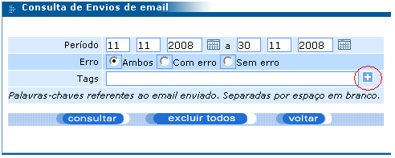
                <p>O campo Tags tem um detalhamento dos filtros que pode ser visualizado após clicar no botão “+” destacado na figura acima. Veja: </p>
                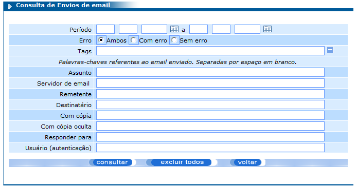
                <p>Após clicar no botão “consultar”, a listagem dos e-mails enviados será exibida respeitando o filtro informado. </p>
                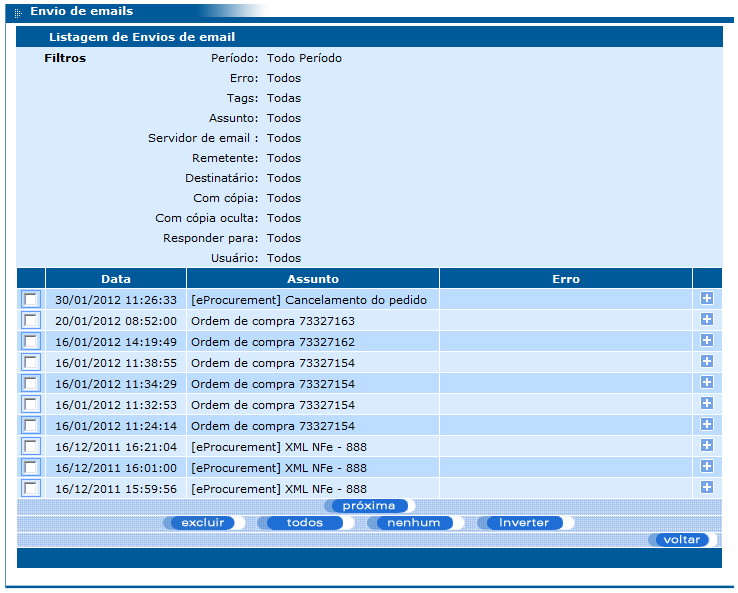

                <br>
                <h3>Agendador – Dias não Trabalhados</h3>
                
                <p>Este módulo deve ser utilizado para cadastrar dias que não serão trabalhados na empresa e que não são feriados. Os dias cadastrados neste módulo poderão ser desconsiderados pelo Agendador no momento em que ele executar alguma rotina, ou seja, existe uma configuração no cadastro de rotinas (será detalhado nos próximos tópicos) que informa se o Agendador executará ou não esta determinada rotina nos dias não trabalhados.</p>
                <p>O Agendador é um programa que é executado a parte do eProcurement cuja função é executar rotinas (previamente desenvolvidas pela equipe de desenvolvimento da Lecom conforme a necessidade do cliente) responsáveis por alguma ação em determinadas datas, períodos, horários, etc. </p>
                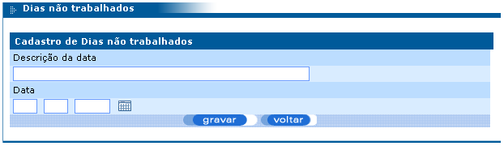

                <br>
                <h3>Agendador – Feriados</h3>
                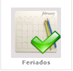
                <p>Este módulo deve ser utilizado para cadastrar os feriados nacionais, estaduais e municipais. Os feriados cadastrados neste módulo poderão ser desconsiderados pelo Agendador no momento em que ele executar alguma rotina, ou seja, existe uma configuração no cadastro de rotinas (será detalhado nos próximos tópicos) que informa se o Agendador executará ou não esta determinada rotina nos feriados.</p>
                <p>A tela de cadastro de feriados é igual à tela de cadastro de dias não trabalhados. </p>

                <br>
                <h3>Agendador – Upload (pacotes)</h3>
                
                <p>Este módulo deve ser utilizado para fazer upload de pacotes contendo as rotinas que deverão ser executadas pelo Agendador, ou seja, deve-se fazer upload dos arquivos “.jar” criados pela equipe Lecom. Estes arquivos “.jar” contém o código Java desenvolvido (programa) e também os caminhos das bibliotecas utilizadas dentro da programação.</p>
                <p>Só é possível cadastrar / agendar a execução de alguma rotina se, antes, for feito o upload do arquivo “.jar” desta rotina. </p>

                <br>
                <h3>Agendador – Rotinas </h3>
                
                <p>Este módulo deve ser utilizado para fazer o cadastro/agendamento de rotinas, bem como configurar as datas, períodos e/ou horários em que devem ser executadas. Um exemplo de rotina muito útil é a que envia emails para os fornecedores e compradores lembrando-os da data de entrega de pedidos.</p>
                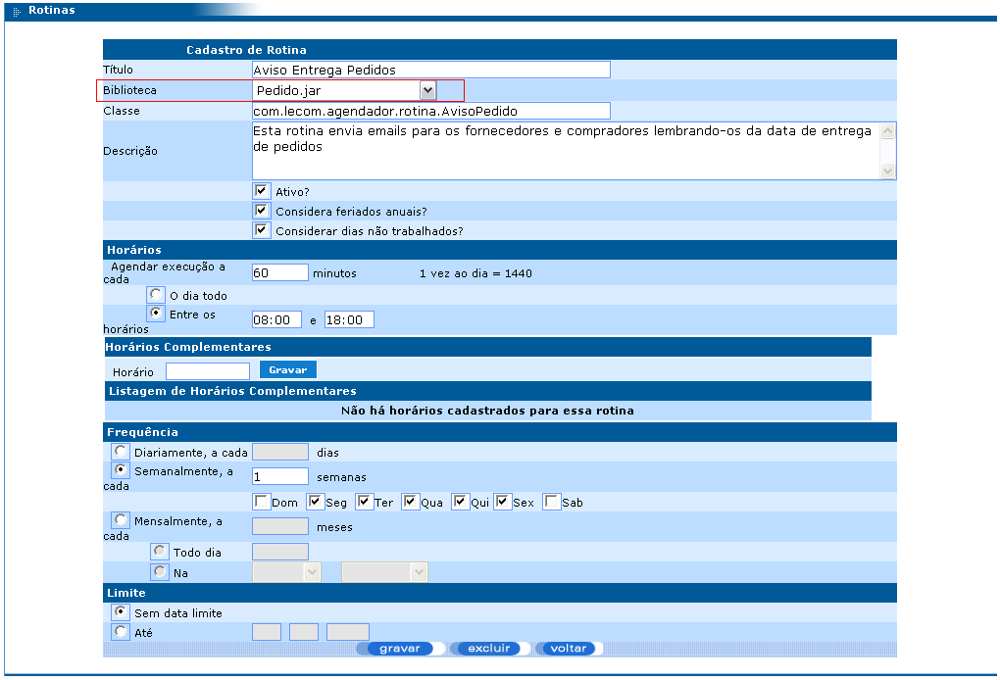
                <p>O campo Biblioteca é uma lista cujas opções exibidas são exatamente os arquivos enviados pelo módulo Upload (pacotes). </p>
            </section>
            <footer>
                <p><small>Hosted on GitHub Pages &mdash; Theme by <a href="https://twitter.com/michigangraham">mattgraham</a></small></p>
            </footer>
        </div>
        <!--[if !IE]><script>fixScale(document);</script><![endif]-->
    </body>
</html>
